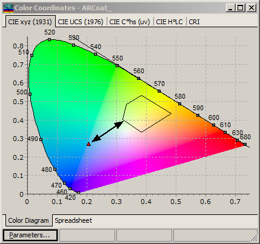

Color Range Targets
Color Range Target
Navigation: OptiLayer Menu Commands > Data Menu > Color Target >
Color Range Target
` <idh_edit_color_target.html>`__ ` <idh_edit_color_target.html>`__ ` <anchor_parameters.html>`__
Range Color Targets are specialized targets represented by a convex polygon. They are available for use in the Chromaticity, CIE YU’V’ 1976, CIE YU’V’ 1960, Hunter Lab, CIE Lab, and CIE Lru***v* color spaces. Starting with version 11.65, polar color coordinates are also supported by this option. When a point in the selected color space falls within the polygon of the Color Range Target, the corresponding term in the Merit function is zero. If the point is located outside the polygon, the corresponding term in the Merit function is calculated as the squared distance from the point to the boundary of the convex polygon, as demonstrated below.

When a Range qualifier is chosen, the Type field in the Color Target editor becomes gray. This indicates that the associated value does not have any significance when the Range qualifier is selected.

Furthermore, instead of displaying the Target value, a special rectangle symbol will appear. Clicking on the arrow to the right will bring up a popup editor for further customization:

On the left side of the dialog, you can specify the number of vertices in the polygon (minimum of 3) and a set of x, y vertex coordinates. The polygon is continuously checked for convexity during editing, with the result displayed at the bottom left of the dialog. As of version 11.65, concave polygons are also permitted as range color targets. The right pane of the dialog illustrates the shape of the polygon during the editing session, with the vertex currently being edited highlighted by a small blue circle. Pressing the OK button will save the current polygon in the Color Target.